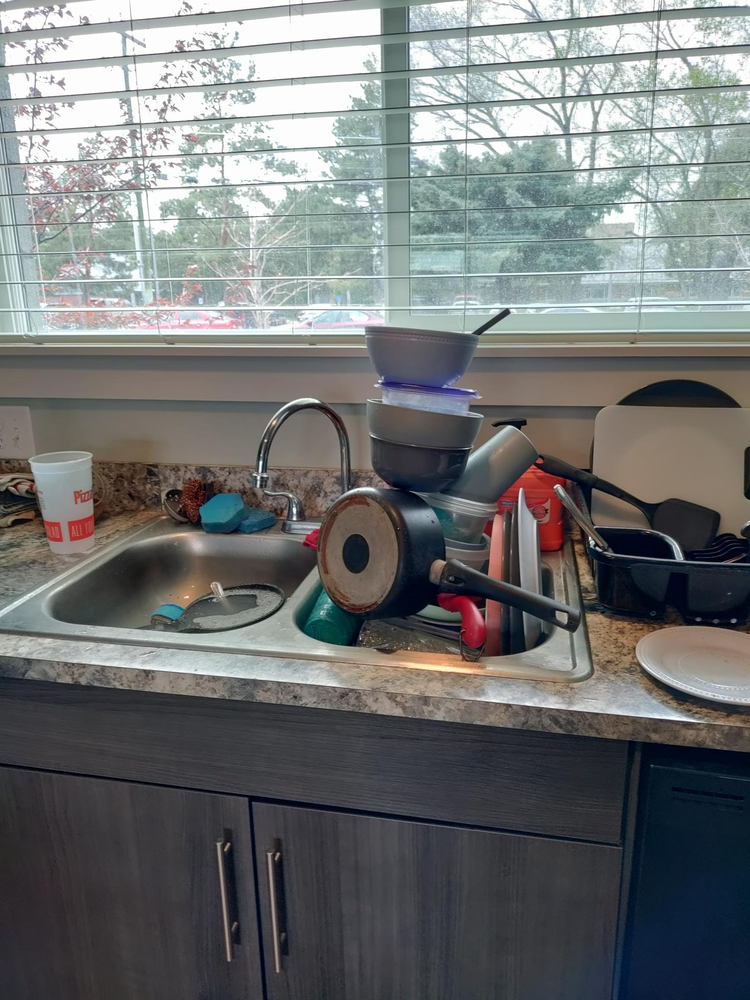
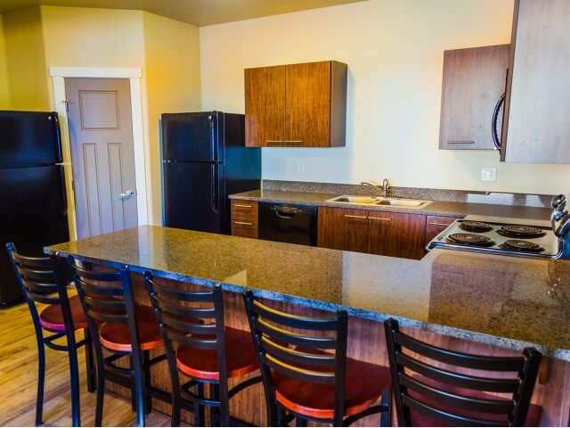

Sink and Fridges
This job is super important for residents who are moving in. The last thing they want is to find
some liquified asparagus in the bottom draw of their fridge when they move in. This job requires some coordination between you and your
roommates. Talk to them and find out which goods need to be thrown away. Plan ahead before the semester ends. I have seen many residents throw
away unopened bags of frozen chicken because they can't take them on the plane with them.
To clean the sink, use vinegar to remove the hard ward spots. Be sure that all dishes are removed and that the coutners are smooth to the touch

